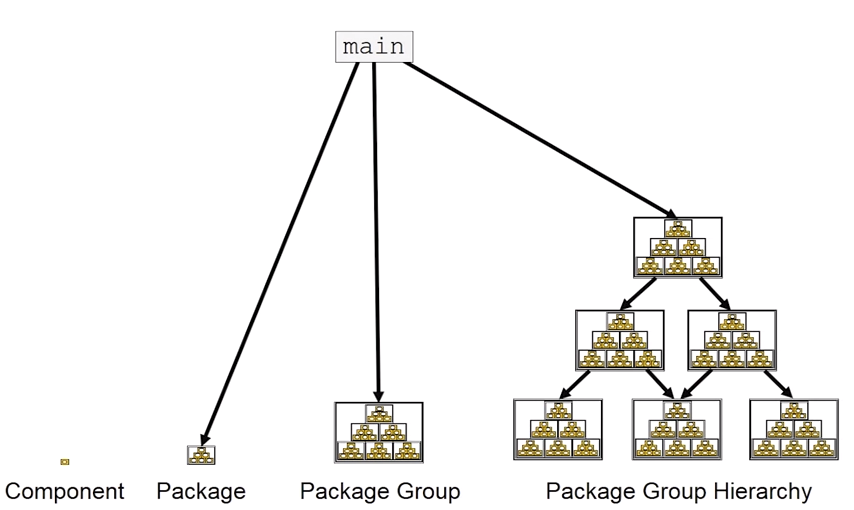
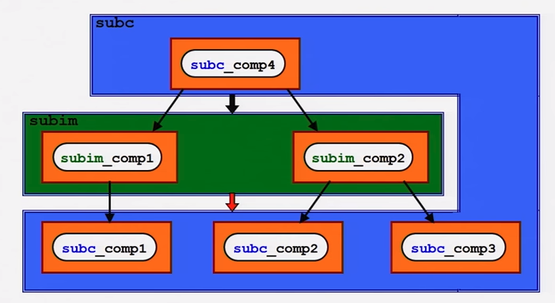
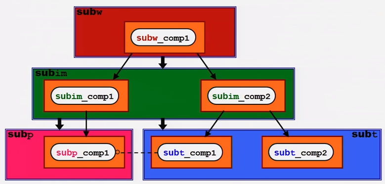

Physical File Structure and Design¶
The Layout of PyMedPhys¶
All source code for PyMedPhys is contained within src/pymedphys. Within this directory are a range of package groups or in Python speak, modules. These modules internally are levelled to inforce a non-cyclic dependency tree.
The interdependencies between the modules are also levelled in a package group hierachy, in such a way that the modules themselves also fall into a levelled structure. This is enforced using the layer-linter Python package.
For further information on the philosphy behind levelling dependencies see the below sections.
John Lakos and Physical Design¶
The physical design of PyMedPhys is inspired by John Lakos at Bloomberg, writer of Large-Scale C++ Software Design. He describes this methodology in a talk he gave which is available on YouTube:
The aim is to have an easy to understand hierarchy of component and package dependencies that continues to be easy to hold in ones head even when there are a very large number of these items.
This is achieved by levelling. The idea is that in each type of aggregation there are only three levels, and each level can only depend on the levels lower than it. Never those higher, nor those the same level. So as such, Level 1 components or packages can only depend on external dependencies. Level 2 can depend on Level 1 or external, and then Level3 can depend ong Level 1, Level 2, or external.
John Lakos uses three aggregation terms, component, package, and package group. Primarily PyMedPhys avoids object oriented programming choosing functional methods where appropriate. However within Python, a single python file itself can act as a module object. This module object contains public and private functions (or methods) and largely acts like an object in the object oriented paradime. So the physical and logical component within PyMedPhys is being interpreted as a single .py file that contains a range of functions. A set of related components are levelled and grouped together in a package, and then the set of these packages make up the package group of PyMedPhys itself.
He presents the following diagram:
It is important that the packages themselves are levelled. See in the following image, even though the individual components themselves form a nice dependency tree, the packages to which those components belong end up interdepending on one another:
In this case, it might be able to be solved by appropriately dividing the components up into differently structured packages:
